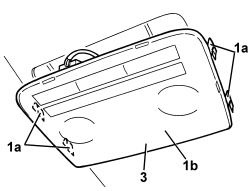
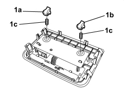

7040E46 REAR COURTESY LIGHT ASSEMBLY - R R
- Path
- Procedures > 70 FITTINGS > 7040 BODY INTERIOR FITTINGS AND TRIM > 7040E INTERIOR COURTESY LIGHT SYSTEM > 7040E46 REAR COURTESY LIGHT ASSEMBLY - R R
- Kind
- repair procedure (removal / refitting; the operation number is the code)
- Applies to
- all engines; all production periods
- Interactive page
- https://sloeber94.github.io/elrnDB/alfa/159/en/#/939011256
Applies to: all engines; all production periods
 Removing
Removing
 Refitting
Refitting1. Release the retainers (1a) and lower the courtesy light (1b) gently.
2. Disconnect the electrical connection for the courtesy light.
Description | Component |
|---|---|
CENTRE REAR COURTESY LIGHT |
3. Keep the courtesy light.

Applies to: all engines; all production periods
1. If necessary, remove side bulb holders (1a) and/or (1b) (bayonet mount), then remove side bulbs (1c) (press-fit).

Applies to: all engines; all production periods
Refitting
Removing- Check that the courtesy light is not damaged.
- If removed, fit the bulb in place.
- Connect the electrical connection for the courtesy light.
- Position the courtesy light and attach the retainers.
- Check that the bulbs are working.
Topics linked from this page (1)
Topics that link to this page (13)
- 5505C41 PASSENGER COMPARTMENT WIRING - R.R
- 5570T27 AERIAL SUPPORT - R.R
- 5570T31 AERIAL COAXIAL LEAD - R R
- 5580C50 WINDOW BAG MODULE (ONE) LH OR RH - R.R
- 7040H10 ROOF PANEL LINING - R.R.
- E2510 COURTESY LIGHTS - WIRING DIAGRAM
- E2510 COURTESY LIGHTS - COMPONENT LOCATION
- E2510 COURTESY LIGHTS - WIRING DIAGRAM
- E2510 COURTESY LIGHTS - COMPONENT LOCATION
- E2535 CONTROLS LIGHTING - WIRING DIAGRAM
- E2535 CONTROLS LIGHTING - COMPONENT LOCATION
- E2535 CONTROLS LIGHTING - WIRING DIAGRAM
- E2535 CONTROLS LIGHTING - COMPONENT LOCATION